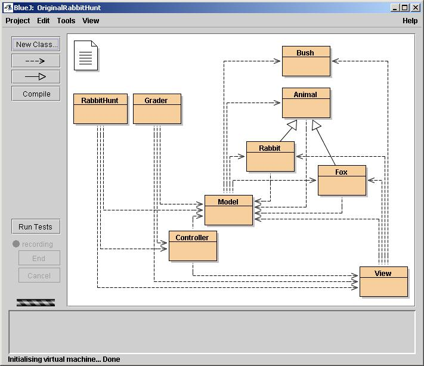

| "Nifty Assignment": Rabbit
Hunt As presented at SIGCSE 2004 |
This page is for any instructor who would like to use this assignment. All materials are collected here. Everything, including this page, is available for downloading in the following zip file. It includes:
.java,
.class, and BlueJ filesRabbitHunt code and assignment
You have full permission to use any and all materials related to this assignment, either as is or modified in any way that you see fit. If you have any questions, or if you would like to share any improvements with me, send email to . Also, it's probably not a good idea to post solutions on the Web, as this may cause difficulties for other instructors.
This program was developed in BlueJ, which
is a nice IDE for beginners, but the program does not depend on BlueJ in any
way. If you don't use BlueJ, just take the .java files (and optionally
the .class files) and ignore the rest (.project, .classpath,
.pkg, .pkh, .ctxt). BlueJ produces a
(simplified) UML diagram which shows the structure of the program, as follows:

Each orange box represents a class. There are two classes containing a main
method, RabbitHunt and Grader. RabbitHunt
runs the program in a GUI; Grader automatically runs the program
a few hundred times, very quickly, and tells what percentage of the time the
rabbit escaped.
The Grader class, as its name implies, was used for grading purposes.
I did not provide the Grader class to the students, but rather
encouraged them to write their own version. That was a mistake; none did, and
many students had no clue how well they were doing at helping the rabbit escape.
If they had been given the Grader class, I believe many would have
done a much better job with this assignment.
There are always a few students who want to argue about every point, and who
complain because the grading (based on percentage of rabbit escapes) is slightly
random. For those students I offered to have Grader run a couple
of thousand games, rather than a few hundred, and use that grade (which could
be either higher or lower). I did not accede to requests to run Grader
as is several times, and take the highest result!
Caveats and observations
No program is perfect. This one has a drawing glitch; it doesn't draw the board
initially (you have to hit Reset), and it doesn't redraw fully
after being hidden by another window and then uncovered. This is a minor problem
on all platforms except MacOS X, where it is a show-stopper. I'm reasonably
sure that the problem is because I used the Canvas class incorrectly,
and I plan to post a corrected version in July 2004.
The MVC pattern that I used would have been better implemented by the Observer
interface and Observable class. Someday I hope to refactor RabbitHunt
to use these--"when I have time." I would be delighted if someone
else did this for me.
I used inner classes for the GUI controls (hence the class files with dollar
signs in their names, such as Controller$RunButtonHandler.class).
This has the advantage that the classes don't clutter up the BlueJ UML diagrams,
but the disadvantage that you may not want to tell your students about inner
classes. It should be easy to convert these into "normal" classes,
if that is desired.
I used the AWT in this program. If I were to rewrite the program today, I might use Swing instead.
Of the above, I consider only the MacOS X problem to be critical. Since I encourage
students to read my code, I want everything to be as polished as possible.
Actually, though, the code for the Fox class contains everything
the students need to know, and most students won't look at the rest of the code..